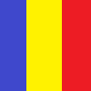
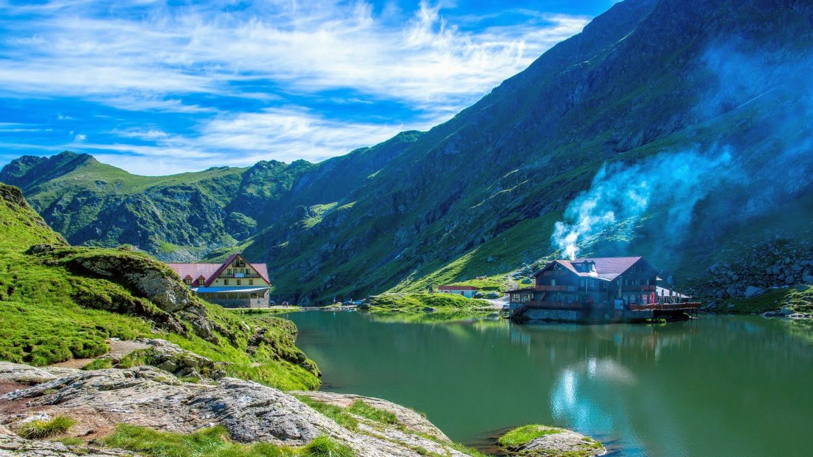
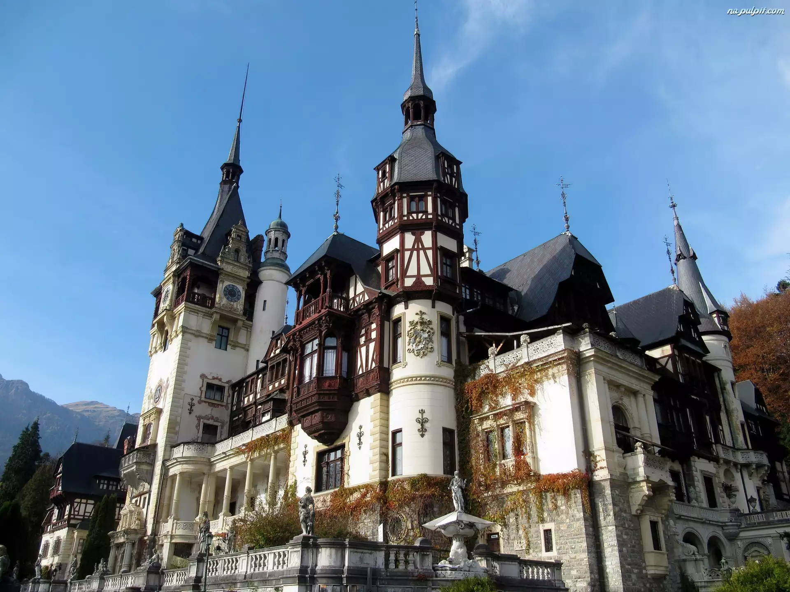

RU
MU
NIA
Strona główna
Turystyka
Kontakt
O stronie

Rumunia to klejnot Europy Wschodniej, znana z Karpat, tętniącego życiem Bukaresztu i zamków Transylwanii. Kraj ten oferuje bogatą historię, różnorodne krajobrazy i legendy o Drakuli. Łączy w sobie dawne i nowoczesne elementy. Odwiedzając średniowieczne twierdze i malownicze wioski, można dostrzec wyjątkowy urok Rumunii.
Rumunia to kraj pełen różnorodnych atrakcji. Można tu odwiedzić malownicze zamki, takie jak Zamek Bran, znany jako “Zamek Drakuli”. W stolicy, Bukareszcie, znajduje się imponujący Pałac Parlamentu, jeden z największych budynków na świecie. Miłośnicy przyrody mogą odkrywać piękno Delty Dunaju, która jest największą zachowaną deltą rzeczną w Europie.
